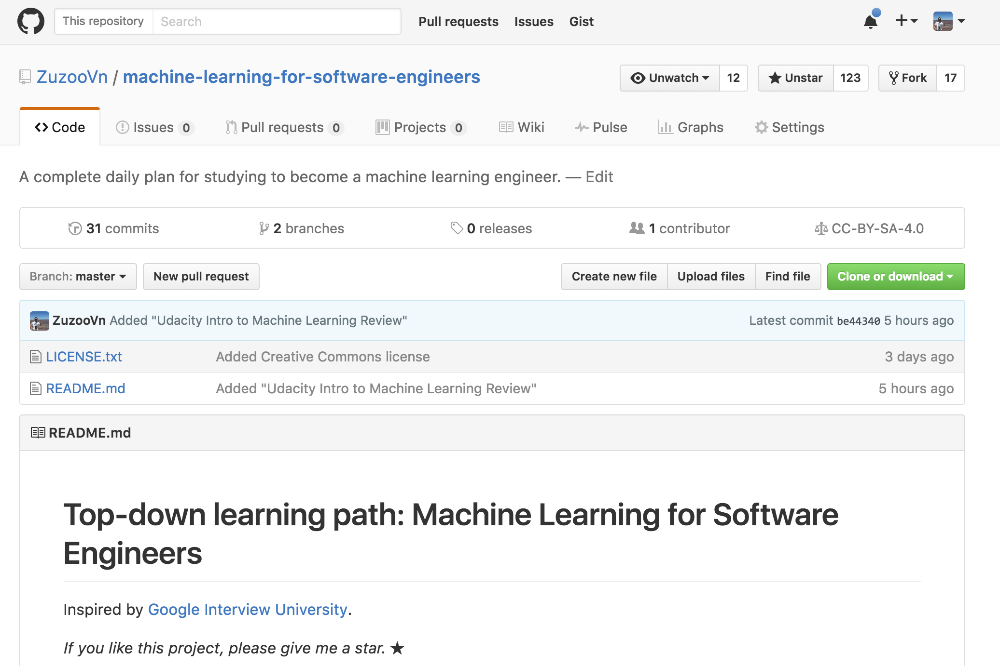
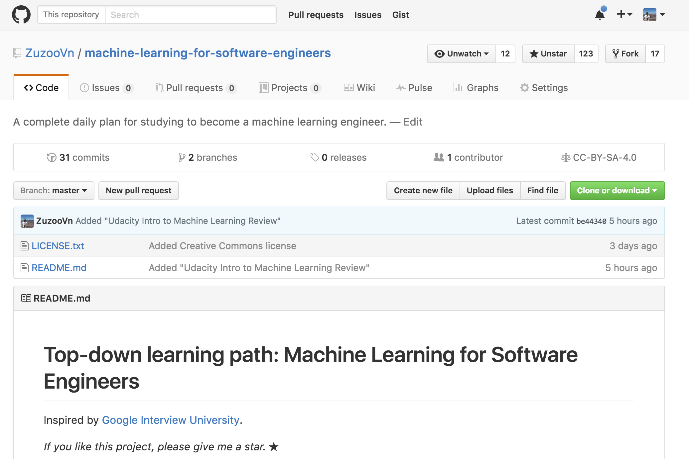

Machine Learning for Software Engineers Reached 123 Stars on Github
Enjoy, and thanks everybody!

https://github.com/ZuzooVn/machine-learning-for-software-engineers
Enjoy, and thanks everybody!

https://github.com/ZuzooVn/machine-learning-for-software-engineers